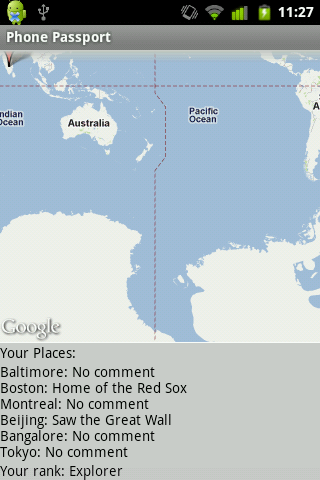

Rahul Rajagopalan
Assignment 5
Phone Passport
- This app allows users to log the various locations they have
travelled to.
- Users can add/remove locations, comment on locations, and
the data is stored in a TinyWebDB under their username.
- The app uses the Google Static Maps API to display a map of
all the locations that the user lists.
- Users can share this map with friends through the app.

- At the bottom, the app displays the locations and the comments
that the user made. This data is also sent when the user shares
their profile.
- The app ranks users based on how many places they've listed.